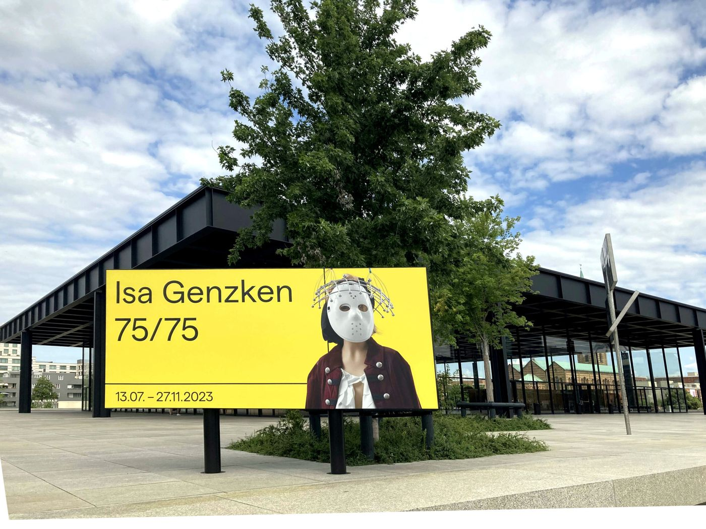
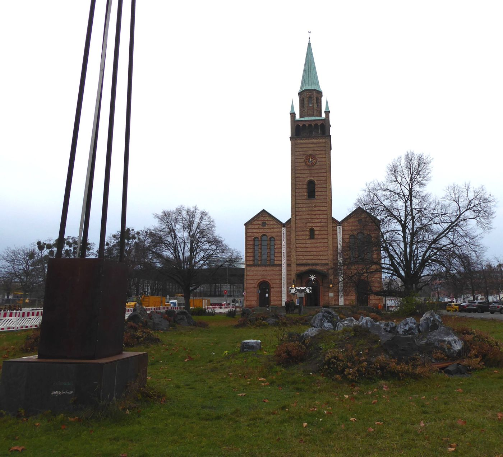

Ein Haus, dann sitzen
Ein Museum, dann Kaffee
Nachmittags, höchstens zehn Minuten zwischen den Türen. Kultur, dann Kaffee.
Essen. Facil, Potsdamer Straße 3. Zwei Sterne im Mandala-Hotel, der Beitrag vom April 2023. Ob der Tisch an dem Tag frei ist, steht auf der Seite des Hauses. Öffnungszeiten
Stopps
- Neue Nationalgalerie

Eine Rose vor der Neuen Nationalgalerie - Matthäikirchplatz

Wo ist „DAS DRITTE LAND“ geblieben? - Facil Öffnungszeiten

Der Guide Michelin 2023 hat gesprochen.
Gelesen
Die Neue Nationalgalerie ist in den Beiträgen ein Haus mit einem Programm, und die Programme widersprechen sich nicht, sie liegen in verschiedenen Monaten.
Am 7. April 2023: „100 Werke für Berlin“, von Gerhard Richter ausgesucht, im Untergeschoss, auf unbestimmte Zeit, denn eines Tages sollen sie im neuen Museum der Moderne in der Nachbarschaft ihren Platz finden. Richter, geboren 1932, über sechs Jahrzehnte so vielfältig, dass man meinen könnte, fünf Künstler würden gezeigt. Hinter dem Bild „Tante Marianne“ verberge sich ein Familiendrama. Tickets online. Geöffnet Dienstag und Mittwoch 10 bis 18, Donnerstag 10 bis 20, Freitag bis Sonntag und feiertags 10 bis 18, montags zu. Jeden ersten Donnerstag im Monat von 16 bis 20 Uhr Eintritt frei. Sonst 14 Euro, ermäßigt 7.
Drei Monate früher, am 3. Januar 2023, eine andere Regelung, und sie ist als Erweiterung geschrieben. Ab Donnerstag, dem 5. Januar, ist der Eintritt im Rahmen von Volkswagen Art4All jeden Donnerstag von 16 bis 20 Uhr frei: Sonderausstellungen in der oberen Halle, Sammlung im Untergeschoss, Skulpturengarten, ohne Ticket. Anlass ist der Zuspruch für den monatlichen freien Eintritt seit dem 16. Dezember 2021. Live Speaker bieten Gespräche und Kurzführungen. Genannt werden Sonderausstellungen von Monica Bonvicini und, noch bis zum 8. Januar, Sascha Wiederhold. Klaus Biesenbach, Direktor, wird zitiert: Kunst sei ein essentielles Bedürfnis, der freie Eintritt stelle sicher, dass allen ein Weg offenstehe. Volkswagen Art4All seit 2018, mit der Nationalgalerie entwickelt, auch am Hamburger Bahnhof und im Kunstmuseum Wolfsburg. In dem Jahr erstmals Teil einer Ausstellungspartnerschaft: 14.000 Schülerinnen und Schüler besuchten mit solchen Tickets die documenta fifteen. Ob die Regel über diesen Winter hinaus gilt, sagt der Beitrag nicht.
Am 13. Juli 2023 steht vor dem Haus, schon im Titel des Stücks, eine Rose. Die Ausstellung heißt „Isa Genzken. 75/75“, zum 75. Geburtstag, 75 Skulpturen aus allen Phasen von den siebziger Jahren bis heute. Genannt werden das zehn Meter lange „Blau-grau-gelbes Hyperbolo ‚MBB‘“ (1981), „Atelier“ (1990), „Venedig“ (1993), „Nofretete – Das Original“ (2012), „Schauspieler“ (2013), und die Arbeit „Pink Rose 2016/2023“. Die Arbeiten sollen eher als bewegte Bilder fungieren als als Skulpturen: aus jedem Blickwinkel ein neues Bild, nichts starr, nichts zweidimensional, filmisch. Ort: Potsdamer Straße 50. Dauer: 13. Juli bis 27. November 2023. Dieselben Öffnungszeiten, Montag geschlossen. Quelle, schreibt der Beitrag, die Neue Nationalgalerie.
Der Matthäikirchplatz daneben ist der Ort, an dem St. Matthäus von Mai 2019 an den Künstlergarten „Das dritte Land“ hatte. Der Beitrag vom 5. Juli 2022 fragt, wo er geblieben ist. Seok Hyun Han und Seung Hwoe Kim, im Text auch Han Seok Hyun und Kim Seung Hwoe, hatten im 30. Jahr des Mauerfalls einen Grenzgarten gebaut, in dem Pflanzen aus Nord- und Südkorea gemeinsam wachsen. Das Baekdu-Daegan-Gebirge, das beide Koreas verbindet, stand Pate für die schwarzen Basaltformationen. 45 Arten weißblühender Wildblumen wurden nach Berlin gebracht. Bis November 2019 Performances, Konzerte, Diskussionen. Ein utopisches Biotop, das den Grenzkonflikt temporär künstlerisch überwindet, nicht weit vom ehemaligen Verlauf der Mauer, so wie der Grenzstreifen selbst ein Drittes zwischen Ost und West war. Über 160 Menschen aus der ganzen Welt unterstützten den Garten. Eröffnet am 23. Mai um 19 Uhr, auf 1.000 Quadratmetern, in Anwesenheit der Künstler. Geplant bis zum 15. November 2019, gestanden bis ins Frühjahr des Jahres, in dem der Beitrag erscheint. Dann ist er verschwunden. Auf dem alten Matthäikirchplatz steht noch die Edelstahlskulptur „Altar“ von Volkmar Haase. Die Tafel am Garten lud ein, über Grenzen und ihre Überwindung nachzudenken, und verwies für mehr in die Kirche. Am 24. September 2021, in der Langen Nacht der Museen, ein Vortrag in der Kunsthalle Erfurt. Anlass waren Planungen, den Garten zur Feier des Tags der Deutschen Einheit am 3. Oktober 2022 in Erfurt zu zeigen. Ob das geschehen ist, steht in dem Stück nicht.
Gegessen wird im Facil. Am 4. April 2023 werden in Karlsruhe die Michelin-Sterne bekanntgegeben. Für Tiergarten-Süd bestätigt „Facil“, Küchenchef Michael Kempf, Potsdamer Straße 3, seine zwei Sterne. Zwei Sterne, zitiert der Beitrag Wikipedia: „eine Spitzenküche, einen Umweg wert“. Ob an dem Nachmittag ein Tisch frei ist, steht auf der Seite des Hauses, nicht hier.